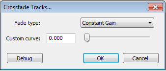
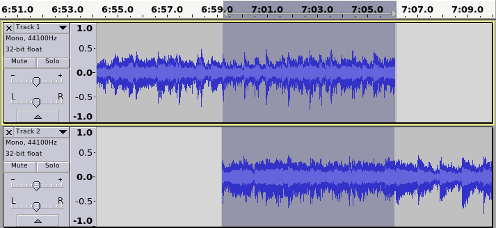
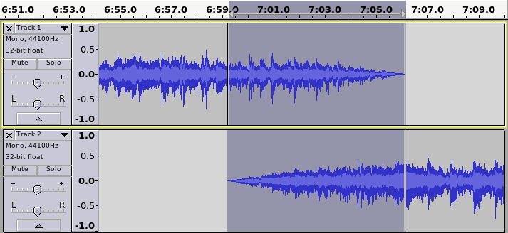

Crossfade Tracks
From Audacity Manual
- Accessed by:
- 
Fade Type
Constant Gain
This is the default. It fades out the upper track, and fade in the lower track with linear fades (the same type of fade as is achieved by using the Fade In / Fade Out effects).
"Constant Gain" ensures that, as long as the original audio is not clipped, the crossfade will not clip - this is the default. However, "Constant Gain" crossfades may cause the overall volume to dip slightly during the fade.
Constant Power 1
"Constant Power" fades combat the tendency of the volume dipping, so will often be the preferred choice, though care needs to be taken when using this type of crossfade as the peak level may rise during the course of the fade.
"Constant Power 1" is generally a good choice as a general purpose crossfade effect.
Constant Power 2
As with "Constant Power 1", this option is also designed to maintain a fairly constant volume through the course of the fade. This variation of the constant power fade starts to fade in a little more rapidly than "Constant Power 1" and the crossfading may sound a bit abrupt in the first or last moments of the fade, though it may be preferred when crossfading songs that are beat-matched. This version is based on the legacy "Cross Fade In" and "Cross Fade Out" effects of previous versions of Audacity.
Custom Curve
The preset options will cater for most crossfading tasks, but if fine control over the effect is required, the custom curve option may be useful. This option enables the "Custom Curve" slider control, which allows the rate at which the tracks crossfade to be manually adjusted.
Custom curve
This text box / slider control has no effect unless "Custom Curve" is selected as the "Fade Type". When enabled, it controls the curvature of the fade in a similar way to the "curve" control on a DJ mixer.
When set to zero, the crossfade is effectively the same as the "Constant Gain" preset.
High settings are useful if you want both tracks to be strongly present during the crossfade time, though it is not likely that the maximum setting will be often required. At maximum (1.0), the upper track will maintain close to full volume until close to the end of the crossfade, and will then fade out rapidly, while the lower track will fade in very rapidly to almost full volume. The overall volume is likely to be noticeably higher during the crossfade period.
When set to the half way position (0.5), the fade is approximately a "constant power" type curve, and will usually maintain a fairly steady volume throughout the crossfade.
The first step is to align the tracks (they may be mono or stereo tracks) so that the start of the lower track overlaps the the end of the upper track. Typically this would be done using the Time Shift Tool. Then the overlapping region must be selected. Selecting may be achieved by clicking on the upper track at the start position of the crossfade, then while holding down the left mouse button, drag down and across to the end of the crossfade region in the lower track.

The Crossfade Tracks effect can then be applied to complete the fade out and fade in.

Optional extra steps
The two tracks will automatically be mixed to one file on export, but if preferred, the tracks may be mixed down to one track within the project by applying Mix and Render from the Tracks menu. Mixing down to a single track can be useful when using "constant power" or custom curves, as it then allows the mix to be Normalized before export.Additional Information
For additional information and advanced techniques, see the detailed article: Creating a Crossfade.